A / B / C / D image report
Development only. Source labels are unverified. Red predictions and orange labels are unmatched, not confirmed model errors. All retained predictions are shown.
Results and full analysis · Open summary image
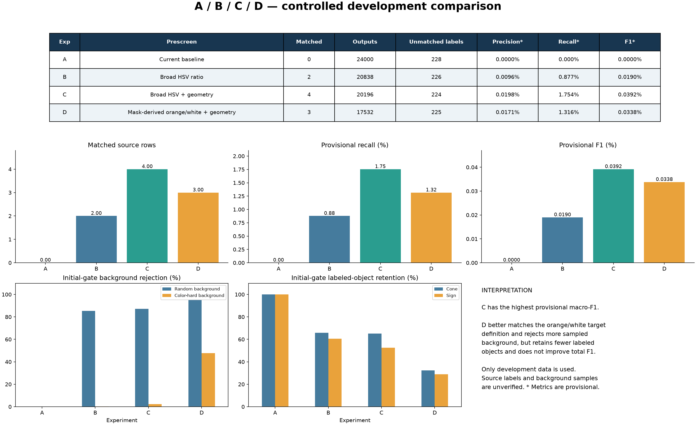
All 120 scenes: supplied labels + A + B + C + D
cone/306955271013985.jpg — A: 0 matched / 200 outputs | B: 0 matched / 200 outputs | C: 0 matched / 200 outputs | D: 0 matched / 190 outputs
cone/303780857882801.jpg — A: 0 matched / 200 outputs | B: 0 matched / 200 outputs | C: 0 matched / 188 outputs | D: 0 matched / 111 outputs
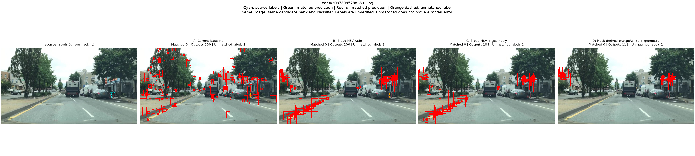
cone/860983364490913.jpg — A: 0 matched / 200 outputs | B: 0 matched / 200 outputs | C: 0 matched / 200 outputs | D: 0 matched / 200 outputs
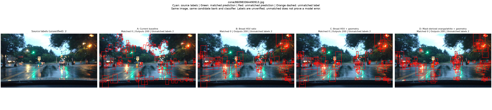
cone/1219194995760112.jpg — A: 0 matched / 200 outputs | B: 0 matched / 200 outputs | C: 0 matched / 200 outputs | D: 0 matched / 200 outputs
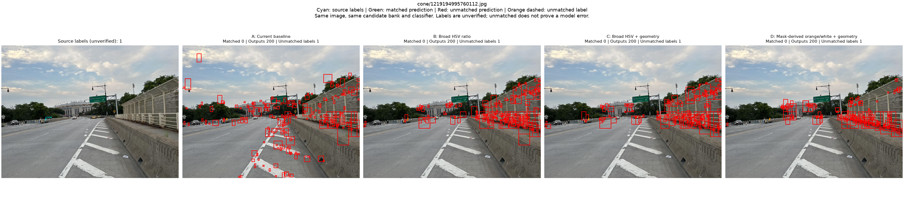
cone/493016032114907.jpg — A: 0 matched / 200 outputs | B: 0 matched / 200 outputs | C: 0 matched / 200 outputs | D: 0 matched / 157 outputs
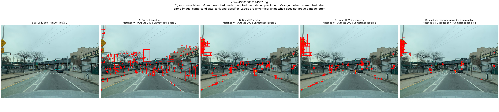
cone/341843450606487.jpg — A: 0 matched / 200 outputs | B: 0 matched / 200 outputs | C: 0 matched / 200 outputs | D: 0 matched / 90 outputs
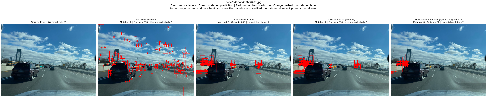
cone/1021102891629783.jpg — A: 0 matched / 200 outputs | B: 0 matched / 102 outputs | C: 0 matched / 100 outputs | D: 0 matched / 21 outputs
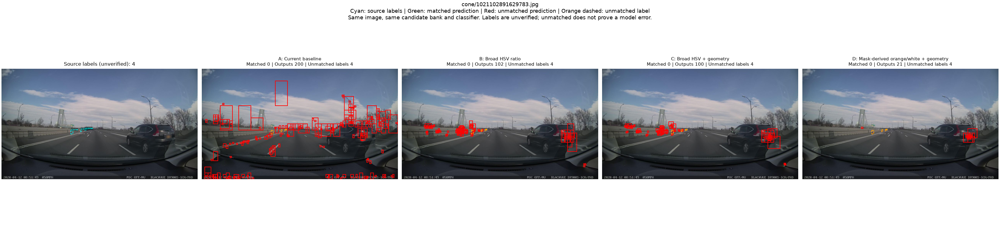
cone/502815594411965.jpg — A: 0 matched / 200 outputs | B: 0 matched / 102 outputs | C: 0 matched / 101 outputs | D: 0 matched / 12 outputs
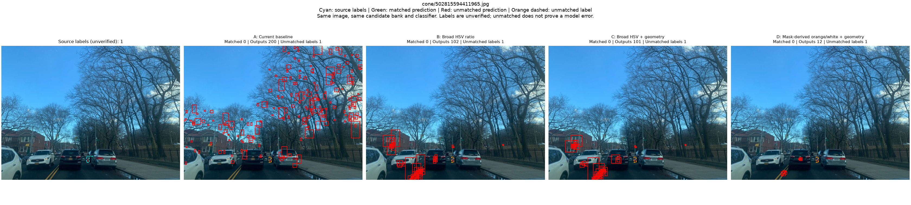
cone/147433550697460.jpg — A: 0 matched / 200 outputs | B: 0 matched / 200 outputs | C: 0 matched / 200 outputs | D: 0 matched / 176 outputs
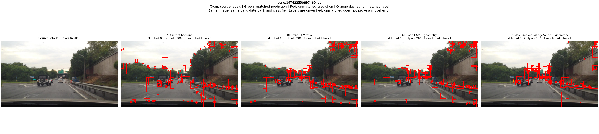
cone/595293413157456.jpg — A: 0 matched / 200 outputs | B: 0 matched / 200 outputs | C: 0 matched / 200 outputs | D: 0 matched / 200 outputs
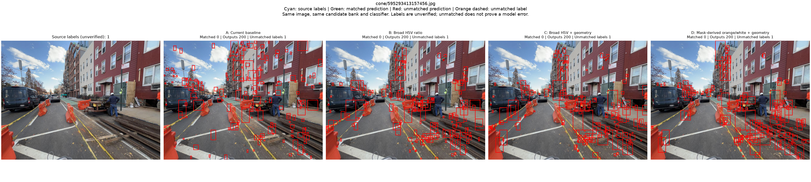
cone/524944378640242.jpg — A: 0 matched / 200 outputs | B: 0 matched / 100 outputs | C: 0 matched / 100 outputs | D: 0 matched / 0 outputs
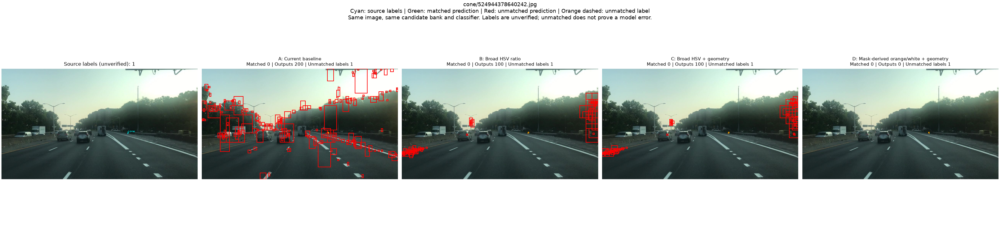
cone/1247864346215856.jpg — A: 0 matched / 200 outputs | B: 0 matched / 131 outputs | C: 0 matched / 131 outputs | D: 0 matched / 135 outputs
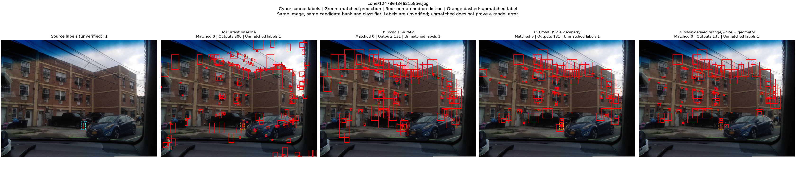
cone/4002956253133995.jpg — A: 0 matched / 200 outputs | B: 1 matched / 200 outputs | C: 1 matched / 200 outputs | D: 1 matched / 200 outputs
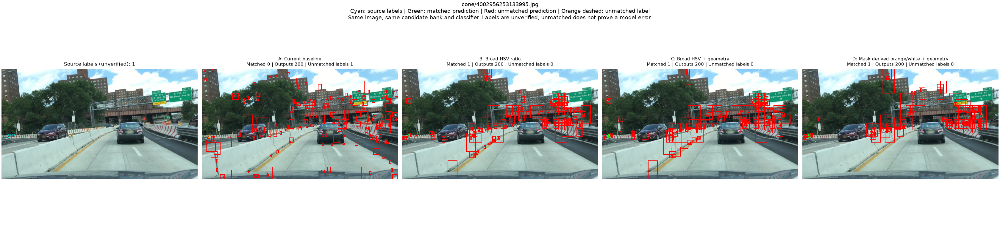
cone/465771551156723.jpg — A: 0 matched / 200 outputs | B: 0 matched / 184 outputs | C: 1 matched / 157 outputs | D: 1 matched / 92 outputs
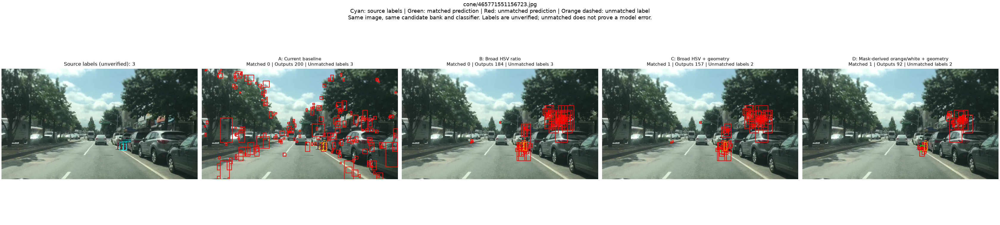
cone/522182845888997.jpg — A: 0 matched / 200 outputs | B: 0 matched / 200 outputs | C: 0 matched / 200 outputs | D: 0 matched / 200 outputs
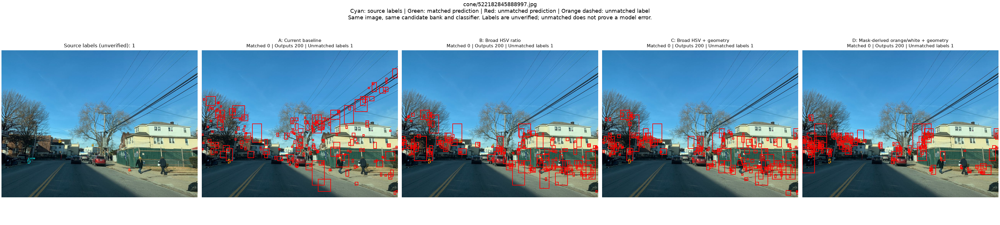
cone/313137306859414.jpg — A: 0 matched / 200 outputs | B: 0 matched / 7 outputs | C: 0 matched / 7 outputs | D: 0 matched / 0 outputs
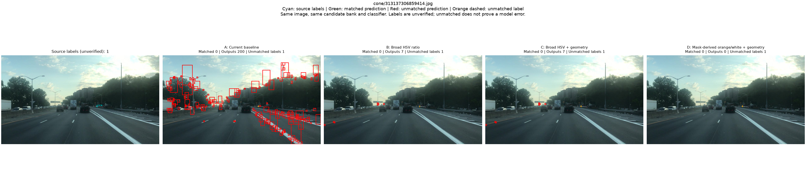
cone/324689962612643.jpg — A: 0 matched / 200 outputs | B: 0 matched / 200 outputs | C: 0 matched / 200 outputs | D: 0 matched / 200 outputs
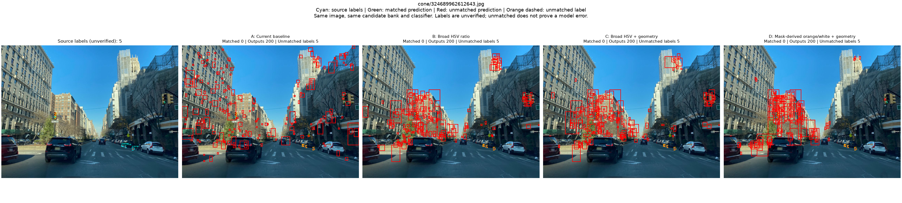
cone/867648700841880.jpg — A: 0 matched / 200 outputs | B: 0 matched / 200 outputs | C: 0 matched / 200 outputs | D: 0 matched / 200 outputs
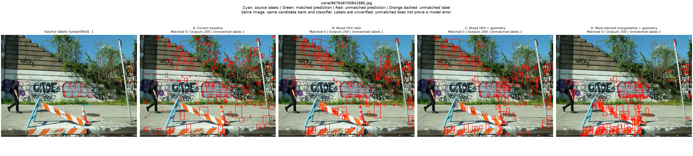
cone/541297187029671.jpg — A: 0 matched / 200 outputs | B: 0 matched / 191 outputs | C: 0 matched / 164 outputs | D: 0 matched / 54 outputs
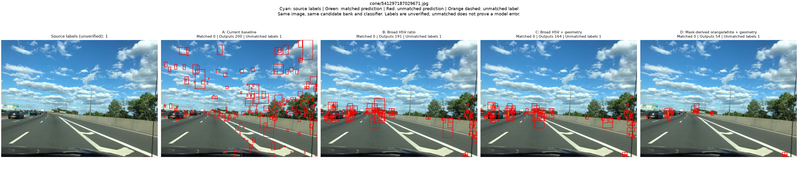
cone/262646145344098.jpg — A: 0 matched / 200 outputs | B: 0 matched / 200 outputs | C: 0 matched / 200 outputs | D: 0 matched / 200 outputs
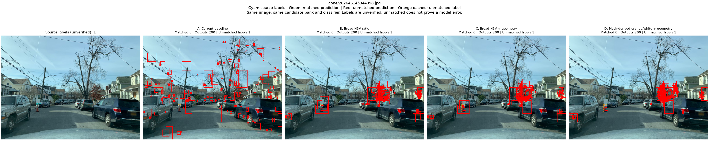
cone/2245263172270496.jpg — A: 0 matched / 200 outputs | B: 0 matched / 200 outputs | C: 0 matched / 200 outputs | D: 0 matched / 200 outputs
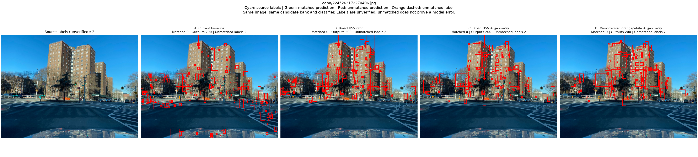
cone/190674199582314.jpg — A: 0 matched / 200 outputs | B: 0 matched / 200 outputs | C: 0 matched / 200 outputs | D: 0 matched / 165 outputs
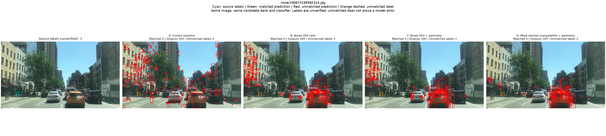
cone/243728734177587.jpg — A: 0 matched / 200 outputs | B: 0 matched / 200 outputs | C: 0 matched / 200 outputs | D: 0 matched / 46 outputs
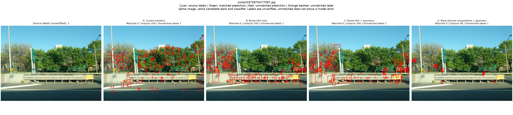
cone/950101052419885.jpg — A: 0 matched / 200 outputs | B: 0 matched / 200 outputs | C: 0 matched / 200 outputs | D: 0 matched / 175 outputs
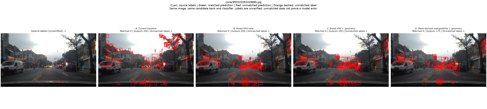
cone/7177499575629177.jpg — A: 0 matched / 200 outputs | B: 0 matched / 200 outputs | C: 0 matched / 200 outputs | D: 0 matched / 200 outputs
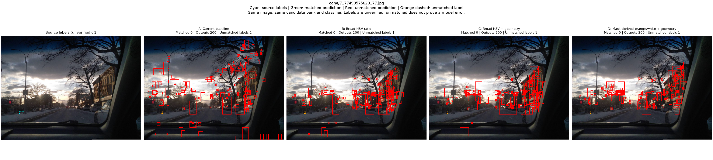
cone/331482785053341.jpg — A: 0 matched / 200 outputs | B: 0 matched / 200 outputs | C: 0 matched / 200 outputs | D: 0 matched / 186 outputs
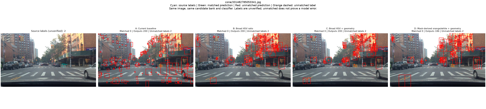
cone/763010771030930.jpg — A: 0 matched / 200 outputs | B: 0 matched / 200 outputs | C: 0 matched / 172 outputs | D: 0 matched / 133 outputs
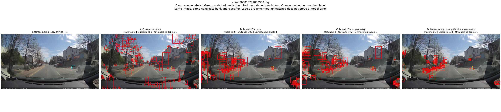
cone/214550297161016.jpg — A: 0 matched / 200 outputs | B: 0 matched / 113 outputs | C: 0 matched / 111 outputs | D: 0 matched / 100 outputs
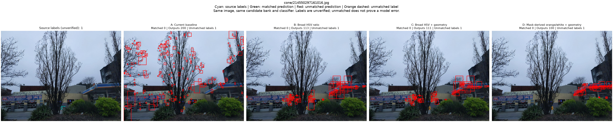
cone/801929887126114.jpg — A: 0 matched / 200 outputs | B: 0 matched / 200 outputs | C: 0 matched / 200 outputs | D: 0 matched / 200 outputs
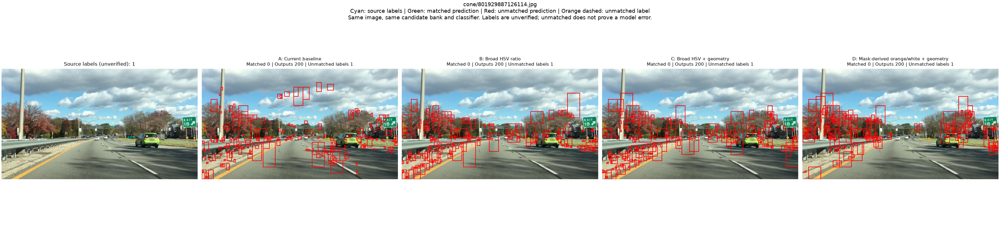
cone/248309813711977.jpg — A: 0 matched / 200 outputs | B: 0 matched / 200 outputs | C: 0 matched / 200 outputs | D: 0 matched / 200 outputs
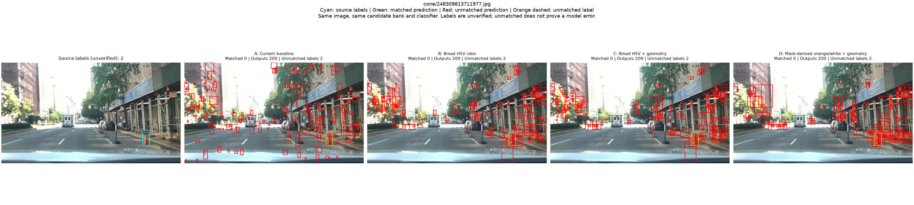
cone/1214923448964401.jpg — A: 0 matched / 200 outputs | B: 0 matched / 200 outputs | C: 0 matched / 200 outputs | D: 0 matched / 200 outputs
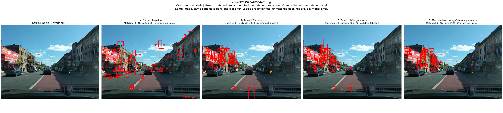
cone/322951712773529.jpg — A: 0 matched / 200 outputs | B: 0 matched / 200 outputs | C: 0 matched / 200 outputs | D: 0 matched / 190 outputs
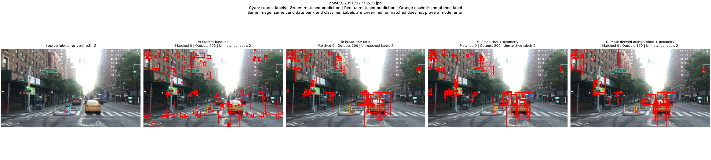
cone/476518770130566.jpg — A: 0 matched / 200 outputs | B: 0 matched / 51 outputs | C: 0 matched / 46 outputs | D: 0 matched / 4 outputs
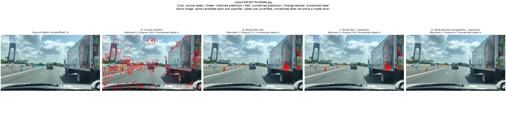
cone/484229092889183.jpg — A: 0 matched / 200 outputs | B: 0 matched / 113 outputs | C: 0 matched / 102 outputs | D: 0 matched / 66 outputs
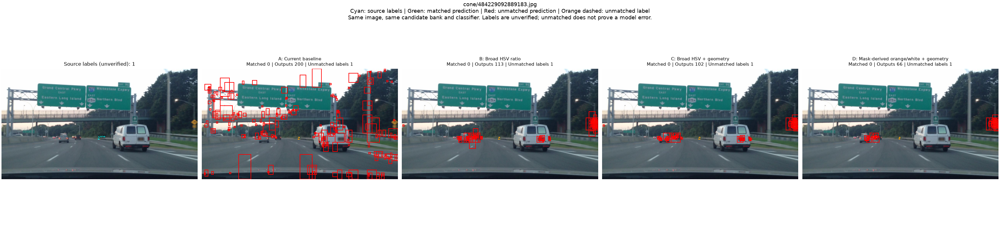
cone/529565200071661.jpg — A: 0 matched / 200 outputs | B: 0 matched / 200 outputs | C: 0 matched / 200 outputs | D: 0 matched / 200 outputs
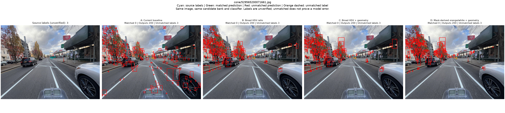
cone/311938057006732.jpg — A: 0 matched / 200 outputs | B: 0 matched / 200 outputs | C: 0 matched / 200 outputs | D: 0 matched / 166 outputs
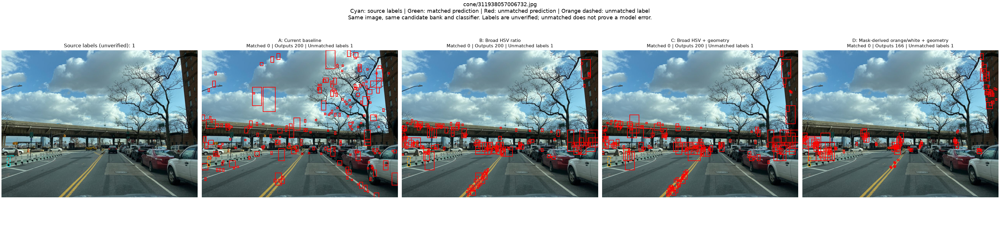
cone/957069058171038.jpg — A: 0 matched / 200 outputs | B: 0 matched / 74 outputs | C: 0 matched / 62 outputs | D: 0 matched / 18 outputs
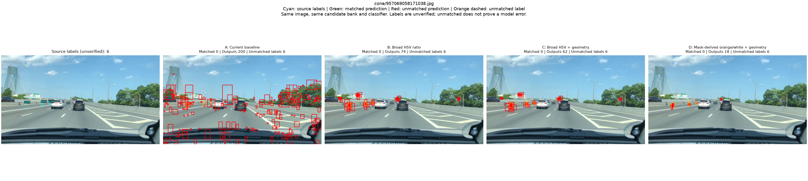
cone/386188202610862.jpg — A: 0 matched / 200 outputs | B: 0 matched / 200 outputs | C: 0 matched / 200 outputs | D: 0 matched / 200 outputs
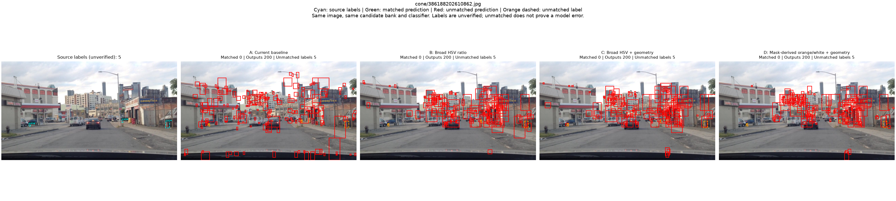
cone/795275714729698.jpg — A: 0 matched / 200 outputs | B: 0 matched / 200 outputs | C: 0 matched / 200 outputs | D: 0 matched / 200 outputs
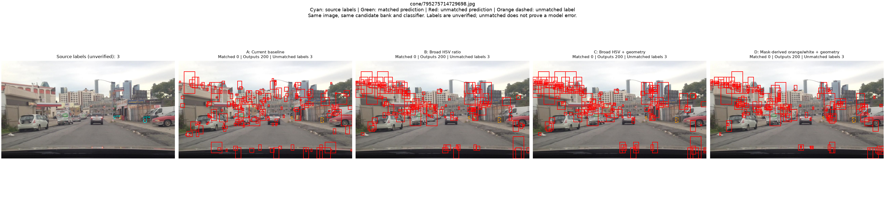
cone/1384910721907646.jpg — A: 0 matched / 200 outputs | B: 0 matched / 200 outputs | C: 0 matched / 200 outputs | D: 0 matched / 200 outputs
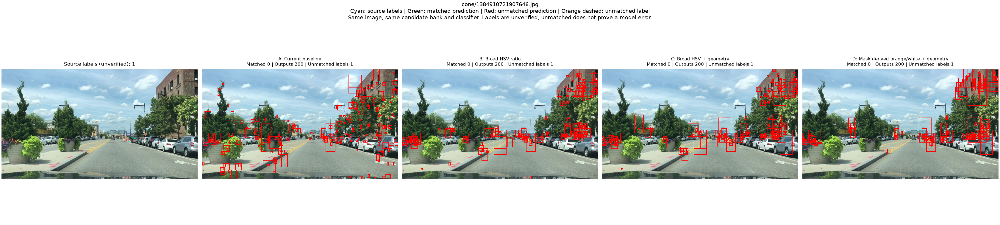
construction_sign/389248392311069.jpg — A: 0 matched / 200 outputs | B: 0 matched / 200 outputs | C: 0 matched / 200 outputs | D: 0 matched / 200 outputs
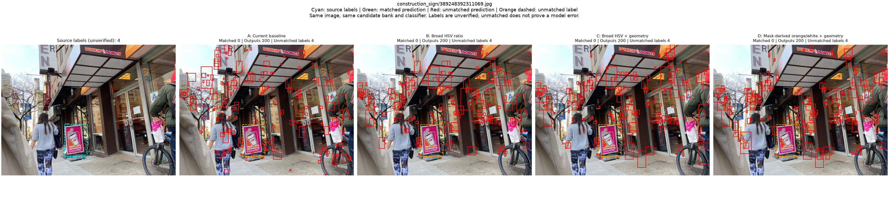
construction_sign/168710185255104.jpg — A: 0 matched / 200 outputs | B: 0 matched / 200 outputs | C: 0 matched / 200 outputs | D: 0 matched / 200 outputs
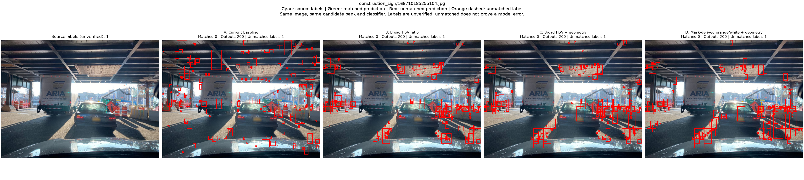
construction_sign/1022511866002551.jpg — A: 0 matched / 200 outputs | B: 0 matched / 200 outputs | C: 0 matched / 200 outputs | D: 0 matched / 200 outputs
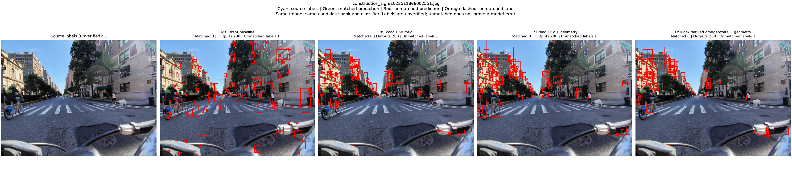
construction_sign/1154682896530112.jpg — A: 0 matched / 200 outputs | B: 0 matched / 200 outputs | C: 0 matched / 200 outputs | D: 0 matched / 200 outputs
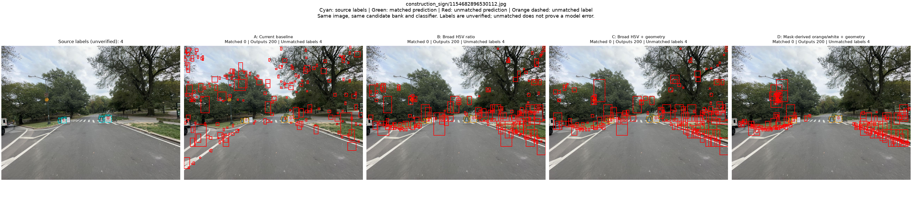
construction_sign/401611710842019.jpg — A: 0 matched / 200 outputs | B: 0 matched / 136 outputs | C: 0 matched / 122 outputs | D: 0 matched / 113 outputs
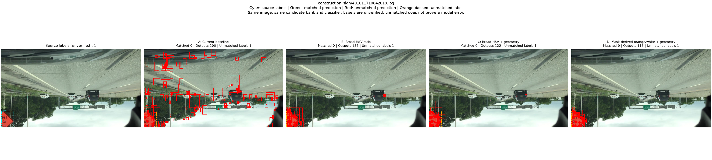
construction_sign/1679166522623272.jpg — A: 0 matched / 200 outputs | B: 0 matched / 200 outputs | C: 0 matched / 200 outputs | D: 0 matched / 200 outputs
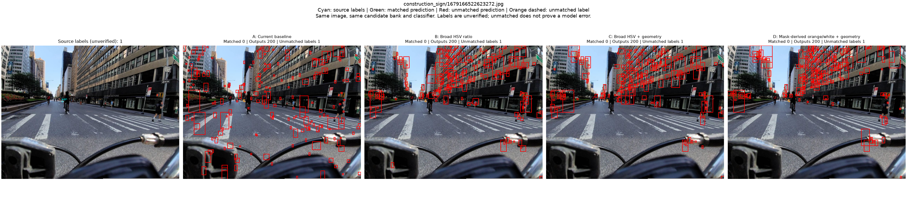
construction_sign/150777980402696.jpg — A: 0 matched / 200 outputs | B: 0 matched / 200 outputs | C: 0 matched / 200 outputs | D: 0 matched / 161 outputs
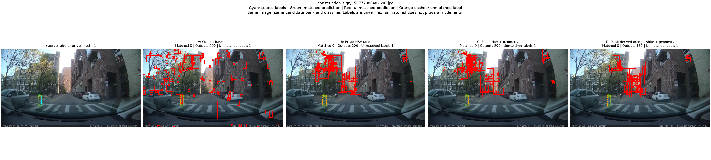
construction_sign/222742409297899.jpg — A: 0 matched / 200 outputs | B: 0 matched / 200 outputs | C: 0 matched / 197 outputs | D: 0 matched / 196 outputs
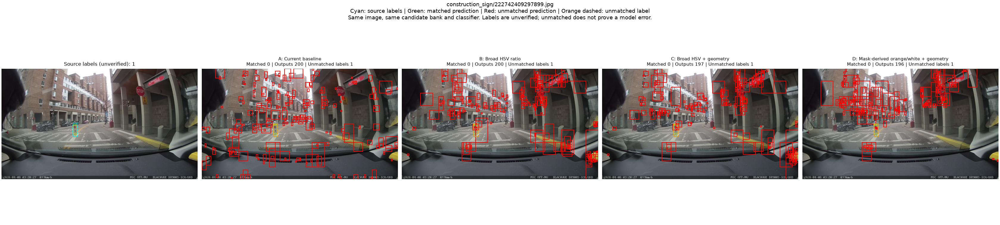
construction_sign/1684602848406839.jpg — A: 0 matched / 200 outputs | B: 0 matched / 159 outputs | C: 0 matched / 151 outputs | D: 0 matched / 115 outputs
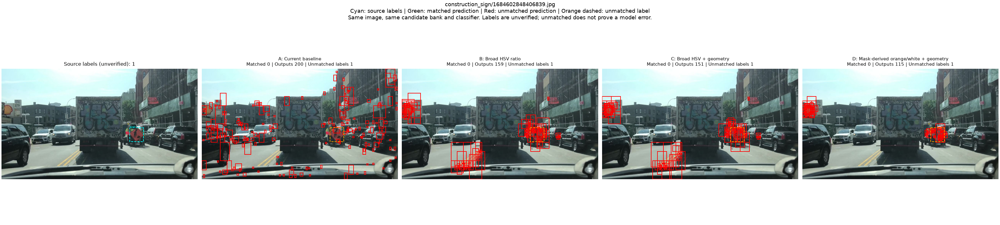
construction_sign/305798697788205.jpg — A: 0 matched / 200 outputs | B: 0 matched / 181 outputs | C: 0 matched / 155 outputs | D: 0 matched / 123 outputs
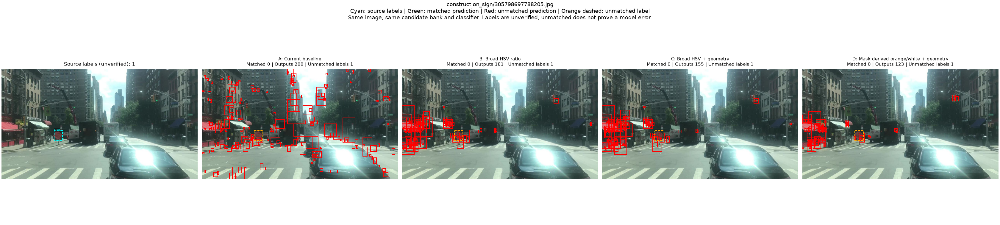
construction_sign/722685405619922.jpg — A: 0 matched / 200 outputs | B: 0 matched / 200 outputs | C: 0 matched / 200 outputs | D: 0 matched / 200 outputs
construction_sign/469358126009517.jpg — A: 0 matched / 200 outputs | B: 0 matched / 200 outputs | C: 0 matched / 200 outputs | D: 0 matched / 200 outputs
construction_sign/522227109159887.jpg — A: 0 matched / 200 outputs | B: 0 matched / 200 outputs | C: 0 matched / 200 outputs | D: 0 matched / 200 outputs
construction_sign/268106551706083.jpg — A: 0 matched / 200 outputs | B: 0 matched / 200 outputs | C: 0 matched / 163 outputs | D: 0 matched / 161 outputs
construction_sign/262791485577998.jpg — A: 0 matched / 200 outputs | B: 0 matched / 165 outputs | C: 0 matched / 136 outputs | D: 0 matched / 8 outputs
construction_sign/1019447905522280.jpg — A: 0 matched / 200 outputs | B: 0 matched / 200 outputs | C: 0 matched / 200 outputs | D: 0 matched / 200 outputs
construction_sign/471554980725638.jpg — A: 0 matched / 200 outputs | B: 0 matched / 200 outputs | C: 0 matched / 200 outputs | D: 0 matched / 200 outputs
construction_sign/504822232231456.jpg — A: 0 matched / 200 outputs | B: 0 matched / 200 outputs | C: 0 matched / 200 outputs | D: 0 matched / 200 outputs
construction_sign/172835484754555.jpg — A: 0 matched / 200 outputs | B: 0 matched / 155 outputs | C: 0 matched / 137 outputs | D: 1 matched / 130 outputs
construction_sign/1018183156519470.jpg — A: 0 matched / 200 outputs | B: 0 matched / 200 outputs | C: 0 matched / 200 outputs | D: 0 matched / 200 outputs
construction_sign/286535153209444.jpg — A: 0 matched / 200 outputs | B: 0 matched / 200 outputs | C: 0 matched / 200 outputs | D: 0 matched / 200 outputs
construction_sign/957129841716221.jpg — A: 0 matched / 200 outputs | B: 0 matched / 200 outputs | C: 0 matched / 200 outputs | D: 0 matched / 200 outputs
construction_sign/1004718748216756.jpg — A: 0 matched / 200 outputs | B: 0 matched / 200 outputs | C: 0 matched / 200 outputs | D: 0 matched / 200 outputs
construction_sign/306397374482471.jpg — A: 0 matched / 200 outputs | B: 0 matched / 200 outputs | C: 0 matched / 200 outputs | D: 0 matched / 200 outputs
construction_sign/713573057517357.jpg — A: 0 matched / 200 outputs | B: 0 matched / 200 outputs | C: 0 matched / 200 outputs | D: 0 matched / 200 outputs
construction_sign/970716570367474.jpg — A: 0 matched / 200 outputs | B: 0 matched / 200 outputs | C: 0 matched / 200 outputs | D: 0 matched / 200 outputs
construction_sign/1018275400301032.jpg — A: 0 matched / 200 outputs | B: 0 matched / 200 outputs | C: 0 matched / 200 outputs | D: 0 matched / 200 outputs
construction_sign/7537943202987969.jpg — A: 0 matched / 200 outputs | B: 0 matched / 200 outputs | C: 0 matched / 200 outputs | D: 0 matched / 200 outputs
construction_sign/1178645257041514.jpg — A: 0 matched / 200 outputs | B: 0 matched / 125 outputs | C: 0 matched / 119 outputs | D: 0 matched / 83 outputs
construction_sign/2033601323764199.jpg — A: 0 matched / 200 outputs | B: 0 matched / 200 outputs | C: 0 matched / 181 outputs | D: 0 matched / 164 outputs
construction_sign/222304592673507.jpg — A: 0 matched / 200 outputs | B: 0 matched / 119 outputs | C: 0 matched / 113 outputs | D: 0 matched / 104 outputs
construction_sign/3987856221307752.jpg — A: 0 matched / 200 outputs | B: 0 matched / 200 outputs | C: 0 matched / 200 outputs | D: 0 matched / 176 outputs
construction_sign/271664734686887.jpg — A: 0 matched / 200 outputs | B: 0 matched / 200 outputs | C: 0 matched / 200 outputs | D: 0 matched / 185 outputs
construction_sign/1657616195081415.jpg — A: 0 matched / 200 outputs | B: 0 matched / 200 outputs | C: 0 matched / 200 outputs | D: 0 matched / 200 outputs
construction_sign/1083526358809764.jpg — A: 0 matched / 200 outputs | B: 0 matched / 166 outputs | C: 0 matched / 144 outputs | D: 0 matched / 37 outputs
construction_sign/1145982642854876.jpg — A: 0 matched / 200 outputs | B: 0 matched / 200 outputs | C: 0 matched / 200 outputs | D: 0 matched / 200 outputs
construction_sign/228217322438257.jpg — A: 0 matched / 200 outputs | B: 0 matched / 200 outputs | C: 0 matched / 200 outputs | D: 0 matched / 200 outputs
construction_sign/473999233855112.jpg — A: 0 matched / 200 outputs | B: 0 matched / 200 outputs | C: 0 matched / 182 outputs | D: 0 matched / 182 outputs
construction_sign/981411816803429.jpg — A: 0 matched / 200 outputs | B: 0 matched / 200 outputs | C: 0 matched / 200 outputs | D: 0 matched / 200 outputs
construction_sign/877816649742590.jpg — A: 0 matched / 200 outputs | B: 0 matched / 200 outputs | C: 0 matched / 200 outputs | D: 0 matched / 200 outputs
combination/8016379431742247.jpg — A: 0 matched / 200 outputs | B: 0 matched / 200 outputs | C: 0 matched / 200 outputs | D: 0 matched / 200 outputs
combination/2244739955903332.jpg — A: 0 matched / 200 outputs | B: 0 matched / 200 outputs | C: 0 matched / 200 outputs | D: 0 matched / 200 outputs
combination/512943154523427.jpg — A: 0 matched / 200 outputs | B: 0 matched / 200 outputs | C: 0 matched / 200 outputs | D: 0 matched / 200 outputs
combination/518533939584927.jpg — A: 0 matched / 200 outputs | B: 0 matched / 200 outputs | C: 0 matched / 183 outputs | D: 0 matched / 178 outputs
combination/1616967309073468.jpg — A: 0 matched / 200 outputs | B: 0 matched / 119 outputs | C: 0 matched / 115 outputs | D: 0 matched / 110 outputs
combination/297430868629111.jpg — A: 0 matched / 200 outputs | B: 0 matched / 200 outputs | C: 0 matched / 200 outputs | D: 0 matched / 200 outputs
combination/169283058352952.jpg — A: 0 matched / 200 outputs | B: 0 matched / 148 outputs | C: 1 matched / 127 outputs | D: 0 matched / 36 outputs
combination/269408638261058.jpg — A: 0 matched / 200 outputs | B: 0 matched / 200 outputs | C: 0 matched / 200 outputs | D: 0 matched / 200 outputs
combination/294394100398505.jpg — A: 0 matched / 200 outputs | B: 0 matched / 200 outputs | C: 0 matched / 200 outputs | D: 0 matched / 200 outputs
combination/3580985032127485.jpg — A: 0 matched / 200 outputs | B: 0 matched / 200 outputs | C: 0 matched / 169 outputs | D: 0 matched / 61 outputs
combination/183644263532106.jpg — A: 0 matched / 200 outputs | B: 0 matched / 200 outputs | C: 0 matched / 200 outputs | D: 0 matched / 200 outputs
combination/1471865253158456.jpg — A: 0 matched / 200 outputs | B: 0 matched / 157 outputs | C: 0 matched / 137 outputs | D: 0 matched / 110 outputs
combination/808417389786174.jpg — A: 0 matched / 200 outputs | B: 1 matched / 200 outputs | C: 1 matched / 200 outputs | D: 0 matched / 142 outputs
combination/552611705726682.jpg — A: 0 matched / 200 outputs | B: 0 matched / 200 outputs | C: 0 matched / 171 outputs | D: 0 matched / 112 outputs
combination/920180495208255.jpg — A: 0 matched / 200 outputs | B: 0 matched / 200 outputs | C: 0 matched / 200 outputs | D: 0 matched / 200 outputs
combination/5107290782668535.jpg — A: 0 matched / 200 outputs | B: 0 matched / 200 outputs | C: 0 matched / 200 outputs | D: 0 matched / 200 outputs
negative/171640348224679.jpg — A: 0 matched / 200 outputs | B: 0 matched / 100 outputs | C: 0 matched / 96 outputs | D: 0 matched / 0 outputs
negative/324181869320386.jpg — A: 0 matched / 200 outputs | B: 0 matched / 200 outputs | C: 0 matched / 200 outputs | D: 0 matched / 196 outputs
negative/307652914145912.jpg — A: 0 matched / 200 outputs | B: 0 matched / 122 outputs | C: 0 matched / 118 outputs | D: 0 matched / 33 outputs
negative/229076875276790.jpg — A: 0 matched / 200 outputs | B: 0 matched / 200 outputs | C: 0 matched / 200 outputs | D: 0 matched / 182 outputs
negative/4174309855986925.jpg — A: 0 matched / 200 outputs | B: 0 matched / 200 outputs | C: 0 matched / 163 outputs | D: 0 matched / 171 outputs
negative/828148397797667.jpg — A: 0 matched / 200 outputs | B: 0 matched / 154 outputs | C: 0 matched / 124 outputs | D: 0 matched / 125 outputs
negative/4347028585327599.jpg — A: 0 matched / 200 outputs | B: 0 matched / 200 outputs | C: 0 matched / 200 outputs | D: 0 matched / 200 outputs
negative/328389268715500.jpg — A: 0 matched / 200 outputs | B: 0 matched / 105 outputs | C: 0 matched / 103 outputs | D: 0 matched / 93 outputs
negative/1720745731429546.jpg — A: 0 matched / 200 outputs | B: 0 matched / 100 outputs | C: 0 matched / 100 outputs | D: 0 matched / 40 outputs
negative/679405280922280.jpg — A: 0 matched / 200 outputs | B: 0 matched / 181 outputs | C: 0 matched / 140 outputs | D: 0 matched / 132 outputs
negative/1879313015876274.jpg — A: 0 matched / 200 outputs | B: 0 matched / 200 outputs | C: 0 matched / 200 outputs | D: 0 matched / 200 outputs
negative/509041050249555.jpg — A: 0 matched / 200 outputs | B: 0 matched / 200 outputs | C: 0 matched / 180 outputs | D: 0 matched / 66 outputs
negative/872655623286812.jpg — A: 0 matched / 200 outputs | B: 0 matched / 118 outputs | C: 0 matched / 114 outputs | D: 0 matched / 101 outputs
negative/216751290039022.jpg — A: 0 matched / 200 outputs | B: 0 matched / 19 outputs | C: 0 matched / 17 outputs | D: 0 matched / 0 outputs
negative/227691438717253.jpg — A: 0 matched / 200 outputs | B: 0 matched / 68 outputs | C: 0 matched / 59 outputs | D: 0 matched / 5 outputs
negative/508223663640945.jpg — A: 0 matched / 200 outputs | B: 0 matched / 200 outputs | C: 0 matched / 200 outputs | D: 0 matched / 126 outputs
negative/2973881886227967.jpg — A: 0 matched / 200 outputs | B: 0 matched / 116 outputs | C: 0 matched / 115 outputs | D: 0 matched / 112 outputs
negative/330106068578302.jpg — A: 0 matched / 200 outputs | B: 0 matched / 60 outputs | C: 0 matched / 49 outputs | D: 0 matched / 0 outputs
negative/182253077079680.jpg — A: 0 matched / 200 outputs | B: 0 matched / 200 outputs | C: 0 matched / 200 outputs | D: 0 matched / 199 outputs
negative/1606077226268778.jpg — A: 0 matched / 200 outputs | B: 0 matched / 200 outputs | C: 0 matched / 200 outputs | D: 0 matched / 200 outputs
negative/1607822302746536.jpg — A: 0 matched / 200 outputs | B: 0 matched / 47 outputs | C: 0 matched / 38 outputs | D: 0 matched / 7 outputs
negative/1461335240904863.jpg — A: 0 matched / 200 outputs | B: 0 matched / 3 outputs | C: 0 matched / 3 outputs | D: 0 matched / 0 outputs
negative/1102970110197953.jpg — A: 0 matched / 200 outputs | B: 0 matched / 131 outputs | C: 0 matched / 124 outputs | D: 0 matched / 128 outputs
negative/327237685414254.jpg — A: 0 matched / 200 outputs | B: 0 matched / 116 outputs | C: 0 matched / 110 outputs | D: 0 matched / 42 outputs